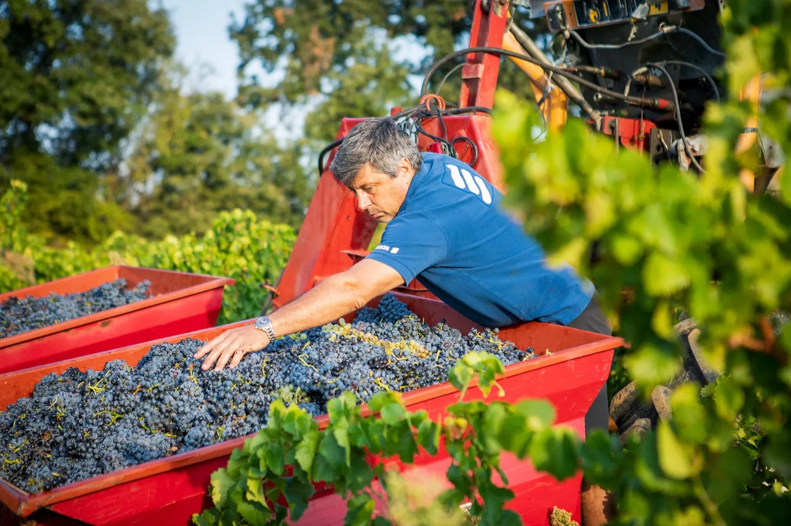
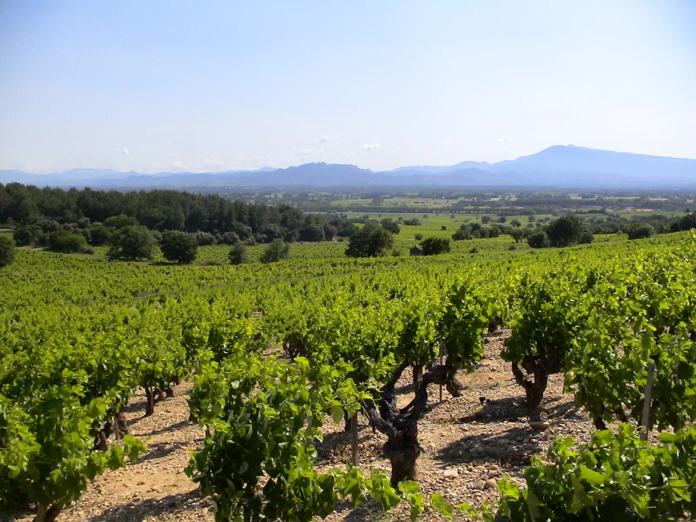
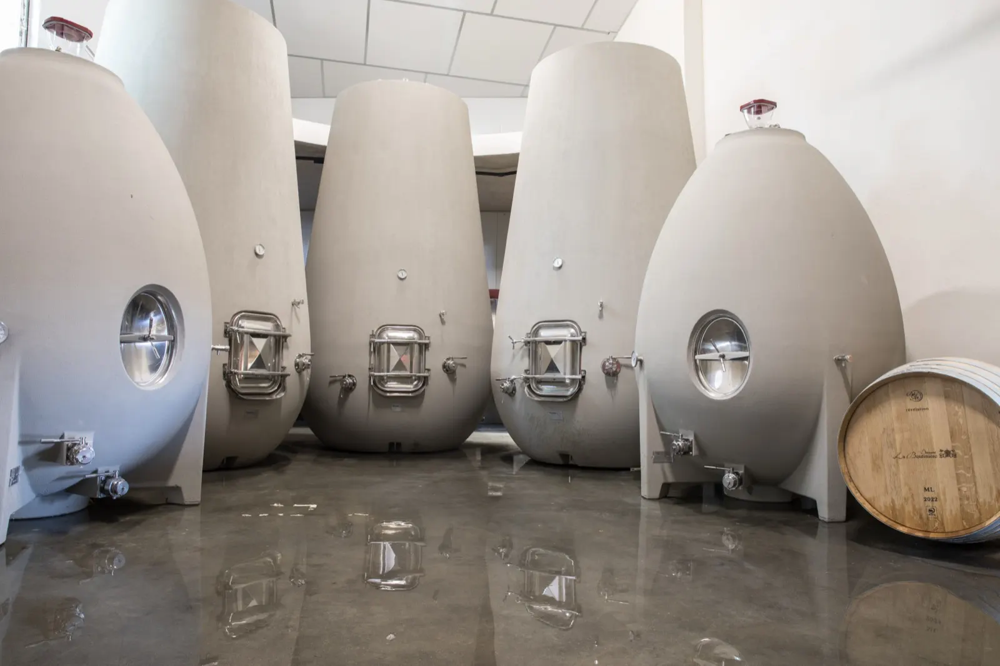
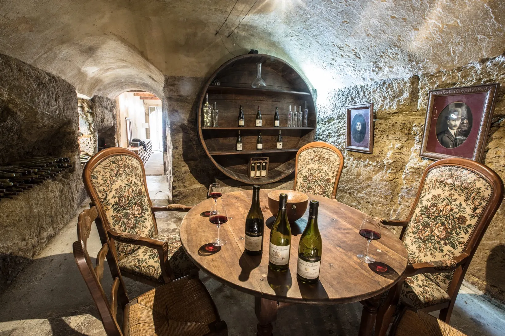
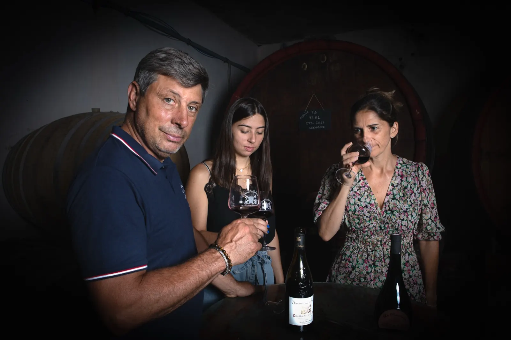
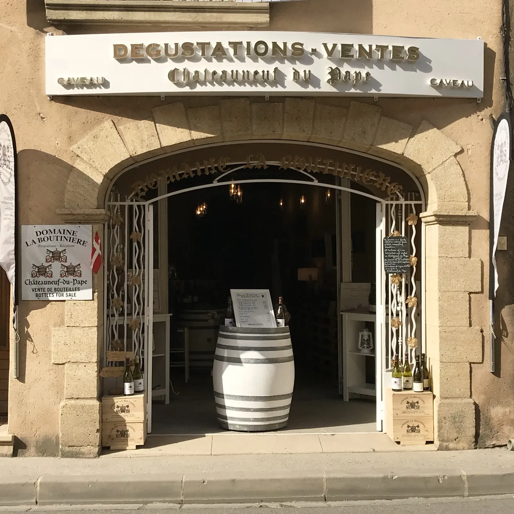
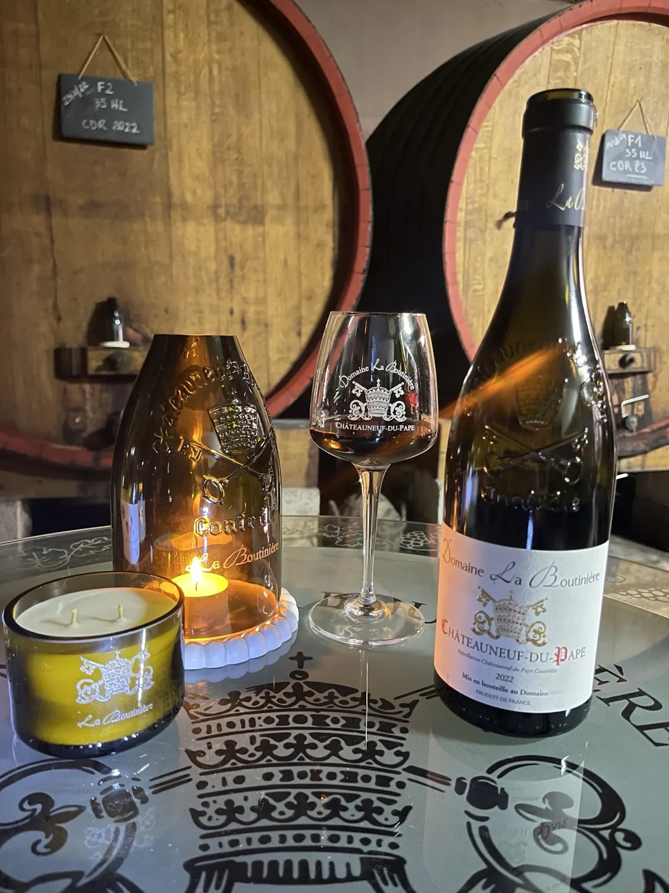

Domaine viticole familial, route de Bédarrides
Vignerons à Châteauneuf-du-Pape depuis 1920.
Frédéric Boutin a repris les vignes de la famille en 1997, rejoint par son épouse Nathalie en 2016. Ils vous reçoivent au domaine pour déguster leurs vins, sur rendez-vous.

Les vendanges au domaine- 1920une exploitation familiale, cinq générations
- 11 hade Châteauneuf-du-Pape
- 4 hade Côtes-du-Rhône
- 2 hade Vin de France
- 14 parcellesdes vignes de 10 à 120 ans
- 40 000bouteilles par an environ, dont 40 % à l'export
Deux familles, un domaine.
En 1920, Eugénie, veuve d'André Fusat et seule avec ses deux fils, épouse Félix Vidal, viticulteur à Châteauneuf-du-Pape. De cette alliance naît le domaine, que chaque génération n'a cessé de faire évoluer.
- 1920
L'alliance des familles Fusat et Vidal donne naissance au domaine.
- 1982
Création de la Cuvée Tradition Rouge, première mise en bouteille du domaine.
- 1997
Leur fils Frédéric reprend les vignes, en respectant les traditions.
- 2003
Naissance d'Amélie, la 5e génération, et de la Cuvée Grande Réserve.
- 2016
Nathalie rejoint Frédéric au domaine.
- 2023
La cave s'agrandit de cuves tulipes et d'œufs en béton.

Vieilles vignes, le Ventoux à l'horizonUne mosaïque de terroirs, à l'est du village.
La propriété est légèrement en hauteur, sur la route de Bédarrides, avec une très belle vue sur le village. Les plus vieilles vignes, plantées en 1902 sur le lieu-dit La Crau, poussent sur un terroir sableux et un sous-sol d'argile rouge.
Pour les rouges
Grenache, Mourvèdre, Syrah, Cinsault, Counoise, Vaccarèse
Pour les blancs
Grenache blanc, Clairette, Roussanne, Bourboulenc
- La Crau
- Le Boucoup
- Les Marines
- Le Bois de la Ville
- Le Grand Pierre
- Valori
- Coste-Froide
- Les Plagnes
Tous les sols sont travaillés et les traitements naturels se multiplient : le domaine est certifié HVE 3, Haute Valeur Environnementale.

La nouvelle cave, réalisée en 2023Le savoir-faire transmis, la cave modernisée.
Cuves inox, béton et tronconiques thermorégulées, égrappoir, pigeage et délestage. Des fermentations longues, de 18 à 31 jours, sous contrôle permanent des températures, pour extraire en souplesse les bons tanins. Les tulipes servent les sélections parcellaires de grenache, les œufs affinent les blancs.
Les cuvées du domaine.
Environ 65 % de la récolte est mise en bouteille, sur trois appellations.
Châteauneuf-du-Pape
- Traditionrouge et blanc
- Grande Réserverouge et blanc
- La cuvée 100Châteauneuf-du-Pape
Côtes-du-Rhône et Vin de France
- La BoutinièreCôtes-du-Rhône rouge
- Le Fabuleux destin d'Amélie Boutinrouge, blanc et rosé
Venir déguster au domaine.
Nous aimons partager notre passion du vin et vous faire découvrir notre univers dans une ambiance conviviale. Choisissez votre moment, la réservation se fait en ligne.
- La Formule Découverte45 min environ
- La Formule Complète1 h 30 environ
- La Formule Privilège2 h environ
- Soirée sous hypnose sensorielleen soirée
Et les Boutinades, soirées Wine & Music au cœur du domaine : un concert, une dégustation à l'aveugle, des plats à partager préparés avec des produits locaux, proposés sur place, et le vigneron avec sa famille, présents toute la soirée. Découvrir les Boutinades




Photophore et bougie, au chaiUne seconde vie pour nos bouteilles.
Nous transformons nos bouteilles de dégustation en plats de présentation, bougies parfumées et photophores. Les bouteilles sont découpées dans les ateliers de la Maison Tchin Tchin ; le socle est réalisé à la main par Nathalie Boutin, en jesmonite, un matériau à la finition proche de la pierre.
Les bougies artisanales portent des senteurs inspirées de nos vins :
- Rosé
- Viognier
- Syrah
Retrouvez ces créations au domaine et au caveau. En savoir plus
Nous trouver à Châteauneuf-du-Pape.
La cave reçoit sur rendez-vous ; le caveau ouvre d'avril à septembre.
La cave
Dégustation et ventes sur rendez-vous
- Adresse
- 17 route de Bédarrides, 84230 Châteauneuf-du-Pape
- Téléphone
- 04 90 83 75 78
- info@domainelaboutiniere.fr
Le caveau
D'avril à septembre, de 10h à 13h et de 14h à 19h
- Adresse
- 10 rue Commandant Lemaître, 84230 Châteauneuf-du-Pape
- Téléphone
- 04 90 83 76 36
- caveau.laboutiniere@gmail.com
Nos vins sont livrés aux particuliers en France, en Europe, en Suisse, aux États-Unis, en Asie, en Australie et au Canada : tarifs et devis par e-mail.